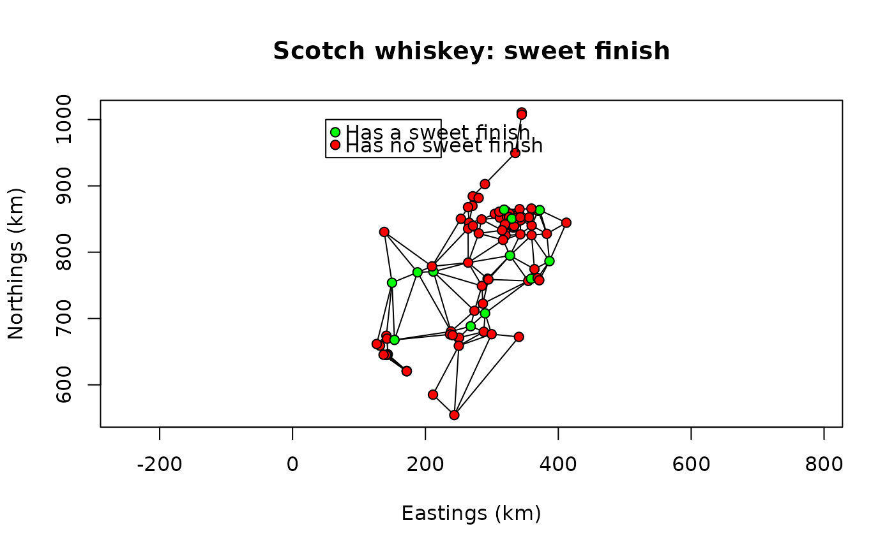

Single Malt Scotch whiskeys from 109 distilleries
data(ScotchWhiskey)
Format
A list with 12 members:
- geo
A
SpatialPointsDataFrame-classobject containing the geographic coordinates and other information about the distilleries.- colour
The whiskey colour coded as a 14-level factor.
- nose
A set of 12 nasal notes (boolean).
- body
A set of 8 body notes (boolean).
- palate
A set of 15 palatine notes (boolean).
- finish
A set of 19 finish (or after-taste) notes (boolean).
- nbChar
Number of characteristics attributed to each distillery for each of the four sets of boolean features: nose, body, palate, finish.
- listW
A
listwobject (seenb2listw) containing information about the spatial edges (neighbour links) between the distilleries.- links.mat
A binary square matrix of the spatial connexions between the distilleries (contiguity matrix).
- neighbors
A
SpatialLinesDataFrame-classobject containing geographic information about the spatial links between the distilleries.- dist
A list of distance matrices obtained for each of the four sets of boolean features.
Source
Pierre Legendre <pierre.legendre@umontreal.ca> and François-Joseph Lapoints <francois-joseph.lapointe@umontreal.ca>, Département de sciences biologiques, Université de Montréal, Montréal, Québec, Canada.
Details
There are 5 data sets: color, nose, body, palate, and finish. The binary (0,1) descriptors are in the same order as on p. 239 of the whisky paper.
There are two whiskies in the classification from the Springbank distillery. One pertains to the Islay group, the other to the Western group.
Please let us know of the analyses you have performed with the whiskey data, especially if you intend to publish them.
The distance matrices were calculated separately as follows for each tasting data set:
D = (1 - S4)^0.5,
where S4 is the Simple matching coefficient of Sokal & Michener (1958). This
coefficient was called S4 in the Gower & Legendre (1986) paper and S1 in the
Legendre & Legendre (2012) book. In package ade4, coefficient
D = sqrt(1 - S4) is computed by function dist.binary using
argument "method=2".
References
Lapointe, F.-J. and P. Legendre. 1994. A classification of pure malt Scotch whiskies. Applied Statistics 43: 237-257 <http://www.dcs.ed.ac.uk/home/jhb/whisky/lapointe/text.html>.
Gower, J.C. and Legendre, P. 1986. Metric and Euclidean properties of dissimilarity coefficients. Journal of Classification, 3, 5-48.
Legendre, P. and Legendre, L. 2012. Numerical Ecology. 3rd English edition. Elsevier Science BV, Amsterdam.
Examples
#> $geo #> [1] 6 #> #> $colour #> NULL #> #> $nose #> [1] 12 #> #> $body #> [1] 8 #> #> $palate #> [1] 15 #> #> $finish #> [1] 19 #> #> $nbChar #> NULL #> #> $listW #> NULL #> #> $links.mat #> [1] 109 #> #> $neighbors #> [1] 2 #> #> $dist #> NULL #>ScotchWhiskey$nbChar#> $nose #> [1] 3 2 3 3 3 2 2 5 2 2 2 2 2 4 2 2 4 2 1 2 3 2 3 1 3 1 4 5 4 4 3 4 3 5 5 4 4 #> [38] 2 3 2 4 3 4 2 3 3 5 2 2 4 2 4 4 2 3 5 2 5 3 4 3 3 2 6 2 4 3 4 3 6 3 5 5 2 #> [75] 3 4 3 4 2 4 2 1 3 2 4 3 4 3 3 4 6 3 4 3 4 1 3 4 3 3 4 4 2 3 3 5 2 3 1 #> #> $body #> [1] 2 5 4 1 1 1 1 4 1 1 2 2 4 1 2 2 2 2 3 3 3 2 2 2 2 2 4 1 2 1 3 2 2 5 1 2 3 #> [38] 2 3 1 3 4 4 3 4 1 3 2 3 4 2 2 3 4 4 4 2 3 3 3 3 4 2 2 2 4 3 2 3 2 3 3 2 2 #> [75] 2 3 2 3 2 2 3 3 3 2 1 2 3 2 2 4 2 2 2 3 1 2 1 4 2 2 2 3 2 2 2 3 3 3 3 #> #> $palate #> [1] 2 5 1 3 4 3 3 2 3 3 2 2 2 7 1 5 1 4 4 3 2 2 2 5 5 4 2 2 3 2 8 6 2 4 4 3 3 #> [38] 2 3 2 3 2 5 3 3 1 4 3 2 2 4 4 5 5 4 4 4 3 1 4 5 1 4 4 2 4 3 3 4 2 3 1 3 3 #> [75] 6 2 4 3 2 4 1 4 2 4 2 3 3 4 4 5 4 4 3 3 1 3 3 3 2 4 4 2 2 5 3 3 2 2 5 #> #> $finish #> [1] 4 2 1 1 1 1 3 1 2 2 1 3 3 2 3 2 2 2 1 1 2 3 5 2 1 3 1 1 1 4 2 1 2 2 1 3 1 #> [38] 3 2 1 4 3 2 3 3 2 2 4 1 3 2 3 3 2 3 3 2 2 2 3 2 2 2 3 2 1 4 1 2 2 2 2 2 2 #> [75] 6 4 2 4 2 2 3 3 2 2 4 3 3 2 1 3 4 3 1 2 2 1 3 5 3 3 3 1 1 2 3 1 1 3 3 #>ScotchWhiskey$listW ## attr(ScotchWhiskey$listW,"class")#> Characteristics of weights list object: #> Neighbour list object: #> Number of regions: 109 #> Number of nonzero links: 634 #> Percentage nonzero weights: 5.336251 #> Average number of links: 5.816514 #> #> Weights style: B #> Weights constants summary: #> n nn S0 S1 S2 #> B 109 11881 634 1268 15568#> [1] "geo" "colour" "nose" "body" "palate" "finish" #> [7] "nbChar" "listW" "links.mat" "neighbors" "dist"#> [1] "nose" "body" "palate" "finish"## plotWhiskey <- function(main) { plot(x=ScotchWhiskey$geo@coords[,1L]/1000, xlab="Eastings (km)", y=ScotchWhiskey$geo@coords[,2L]/1000, ylab="Northings (km)", main=main, type="n",asp=1) apply( ScotchWhiskey$neighbor@data,1L, function(X,coords) { segments( coords[X[1L],1L]/1000, coords[X[1L],2L]/1000, coords[X[2L],1L]/1000, coords[X[2L],2L]/1000 ) }, coords=ScotchWhiskey$geo@coords ) invisible(NULL) } ## plotWhiskey("Scotch whiskey: peat nose")cols <- c("blue","orange") points(ScotchWhiskey$geo@coords/1000,pch=21L, bg=cols[ScotchWhiskey$nose[,"peat"]+1L])## plotWhiskey("Scotch whiskey: soft body")cols <- c("red","green") points(ScotchWhiskey$geo@coords/1000,pch=21L, bg=cols[ScotchWhiskey$body[,"soft"]+1L])## plotWhiskey("Scotch whiskey: spicy palate")cols <- c("red","green") points(ScotchWhiskey$geo@coords/1000,pch=21L, bg=cols[ScotchWhiskey$palate[,"spice"]+1L])## plotWhiskey("Scotch whiskey: sweet finish")cols <- c("red","green") points(ScotchWhiskey$geo@coords/1000,pch=21L, bg=cols[ScotchWhiskey$finish[,"sweet"]+1L])#> 1 2 3 4 5 #> 1 0.0000000 0.6454972 0.5773503 0.7071068 0.5773503 #> 2 0.6454972 0.0000000 0.6454972 0.5000000 0.6454972 #> 3 0.5773503 0.6454972 0.0000000 0.7071068 0.7071068 #> 4 0.7071068 0.5000000 0.7071068 0.0000000 0.5773503 #> 5 0.5773503 0.6454972 0.7071068 0.5773503 0.0000000#> 1 2 3 4 5 #> 1 0.0000000 0.6123724 0.7071068 0.6123724 0.3535534 #> 2 0.6123724 0.0000000 0.7905694 0.7071068 0.7071068 #> 3 0.7071068 0.7905694 0.0000000 0.6123724 0.7905694 #> 4 0.6123724 0.7071068 0.6123724 0.0000000 0.5000000 #> 5 0.3535534 0.7071068 0.7905694 0.5000000 0.0000000#> 1 2 3 4 5 #> 1 0.0000000 0.5773503 0.4472136 0.5773503 0.6324555 #> 2 0.5773503 0.0000000 0.5163978 0.6324555 0.5773503 #> 3 0.4472136 0.5163978 0.0000000 0.3651484 0.4472136 #> 4 0.5773503 0.6324555 0.3651484 0.0000000 0.4472136 #> 5 0.6324555 0.5773503 0.4472136 0.4472136 0.0000000#> 1 2 3 4 5 #> 1 0.0000000 0.5619515 0.5129892 0.5129892 0.3973597 #> 2 0.5619515 0.0000000 0.3973597 0.3973597 0.3973597 #> 3 0.5129892 0.3973597 0.0000000 0.3244428 0.3244428 #> 4 0.5129892 0.3973597 0.3244428 0.0000000 0.3244428 #> 5 0.3973597 0.3973597 0.3244428 0.3244428 0.0000000## ### The data tables: ScotchWhiskey$colour#> [1] yellow red sherry p.gold p.gold v.pale wyne p.gold amber #> [10] f.gold f.amber gold amber amber yellow p.gold o.gold o.gold #> [19] pale gold wyne f.gold pale amber p.gold f.gold gold #> [28] f.gold gold f.amber f.amber gold pale f.gold gold pale #> [37] amber v.pale gold f.gold gold gold amber f.gold gold #> [46] bronze wyne f.gold gold f.gold f.gold bronze gold p.gold #> [55] f.gold f.gold gold p.gold p.gold f.gold f.gold f.gold gold #> [64] wyne wyne f.gold bronze amber f.gold gold f.gold gold #> [73] gold bronze p.gold gold wyne p.amber f.gold f.gold wyne #> [82] f.gold amber f.gold amber red p.gold p.amber f.gold amber #> [91] amber amber amber red amber f.amber bronze gold gold #> [100] amber red p.amber wyne p.amber f.gold f.gold f.gold f.gold #> [109] gold #> 14 Levels: amber bronze f.amber f.gold gold o.gold p.amber p.gold pale ... yellow#> aroma peat sweet light fresh dry fruit grass sea sherry spicy rich #> [1,] TRUE TRUE FALSE FALSE FALSE FALSE TRUE FALSE FALSE FALSE FALSE FALSE #> [2,] FALSE FALSE TRUE FALSE FALSE FALSE FALSE FALSE FALSE FALSE FALSE TRUE #> [3,] FALSE TRUE FALSE FALSE FALSE TRUE FALSE FALSE TRUE FALSE FALSE FALSE #> [4,] FALSE FALSE TRUE FALSE FALSE FALSE FALSE TRUE FALSE TRUE FALSE FALSE #> [5,] FALSE FALSE FALSE FALSE TRUE FALSE TRUE TRUE FALSE FALSE FALSE FALSE #> [6,] TRUE FALSE FALSE FALSE TRUE FALSE FALSE FALSE FALSE FALSE FALSE FALSE#> soft med full round smooth light firm oily #> [1,] TRUE TRUE FALSE FALSE FALSE FALSE FALSE FALSE #> [2,] TRUE TRUE TRUE TRUE TRUE FALSE FALSE FALSE #> [3,] FALSE TRUE TRUE FALSE FALSE TRUE TRUE FALSE #> [4,] FALSE FALSE TRUE FALSE FALSE FALSE FALSE FALSE #> [5,] TRUE FALSE FALSE FALSE FALSE FALSE FALSE FALSE #> [6,] FALSE FALSE FALSE FALSE FALSE FALSE TRUE FALSE#> full dry sherry big light smooth clean fruit grass smoke sweet spice #> [1,] FALSE FALSE TRUE FALSE FALSE FALSE FALSE FALSE FALSE FALSE FALSE FALSE #> [2,] TRUE FALSE TRUE FALSE FALSE FALSE FALSE TRUE FALSE FALSE TRUE TRUE #> [3,] FALSE FALSE FALSE FALSE FALSE FALSE FALSE FALSE FALSE FALSE TRUE FALSE #> [4,] FALSE FALSE FALSE TRUE FALSE FALSE FALSE FALSE TRUE FALSE TRUE FALSE #> [5,] FALSE FALSE FALSE FALSE TRUE FALSE FALSE TRUE TRUE FALSE TRUE FALSE #> [6,] FALSE FALSE FALSE FALSE TRUE FALSE FALSE TRUE FALSE FALSE FALSE TRUE #> oil salt arome #> [1,] TRUE FALSE FALSE #> [2,] FALSE FALSE FALSE #> [3,] FALSE FALSE FALSE #> [4,] FALSE FALSE FALSE #> [5,] FALSE FALSE FALSE #> [6,] FALSE FALSE FALSE#> full dry warm big light smooth clean fruit grass smoke sweet spice #> [1,] TRUE TRUE FALSE FALSE FALSE FALSE FALSE TRUE FALSE FALSE FALSE TRUE #> [2,] FALSE FALSE FALSE FALSE FALSE FALSE TRUE FALSE FALSE FALSE FALSE FALSE #> [3,] FALSE FALSE FALSE FALSE FALSE FALSE FALSE FALSE FALSE FALSE FALSE FALSE #> [4,] FALSE FALSE FALSE TRUE FALSE FALSE FALSE FALSE FALSE FALSE FALSE FALSE #> [5,] FALSE FALSE FALSE FALSE FALSE FALSE FALSE FALSE FALSE FALSE FALSE TRUE #> [6,] FALSE TRUE FALSE FALSE FALSE FALSE FALSE FALSE FALSE FALSE FALSE FALSE #> oil salt arome ling long very quick #> [1,] FALSE FALSE FALSE FALSE FALSE FALSE FALSE #> [2,] FALSE FALSE FALSE TRUE FALSE FALSE FALSE #> [3,] FALSE TRUE FALSE FALSE FALSE FALSE FALSE #> [4,] FALSE FALSE FALSE FALSE FALSE FALSE FALSE #> [5,] FALSE FALSE FALSE FALSE FALSE FALSE FALSE #> [6,] FALSE FALSE FALSE FALSE FALSE FALSE FALSE